Reportes


Equipo
Rodrigo Pacheco Valdez
Andrea Solano López
Práctica 555
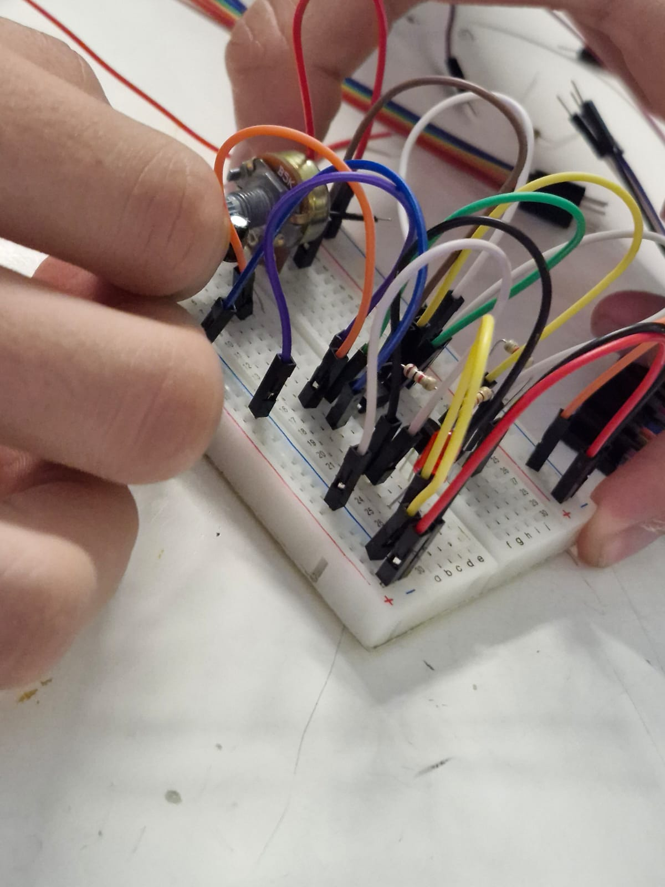Resumen: La practica 555, consto de usar este componente en la elaboración de un circuito sencillo, el cual debe de ir reduciendo la potencia de la luz con un potenciómetro. En este pequeño reporte se podrá analizar los circuitos que mi compañero y yo realizamos utilizando el potenciómetro y el componente 555, para que con estos se puediera probar y dar a conocer como funciona. Materiales: Los materiales que se utilizaron durante esta práctica fueron: Protoboard, Leds, jumpers, pila de 9 volts, Potenciómetro,555, Resistencia 1K En la construcción se busco conectar correctamente todos los cables y uniones existentes en la protoboard, de manera que el LED pudiera encender exitosamente, se busco realizarlo primero en Tinkercad para así poder evitar cualquier error a la hora de hacerlo en físico y definitivamente el haberlo realizado primero en Tinkercad nos ayudo a ver como podía funcionar en la vida real aunque le cambiáramos algunos aspectos. Este circuito contaba de partes muy básicas y lo que se buscaba lograr era poder controlar la intensidad del LED con el potenciómetro.
- 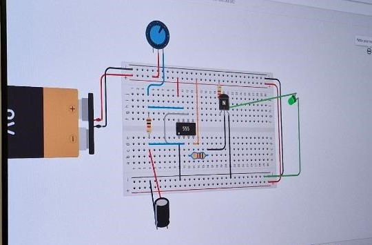
Página web sencilla
Para esta práctica, diseñamos las bases de una página web en la aplicación de visual code que es base python usando diferentes herramientas que nos ayudaron a escribir, acomodar, presentar e incluso agregar imágenes en la página Las páginas web tienen muchos usos, desde presentar datos a un grupo de personas, hasta el intercambio de vienes, incluyendo aplicaciones para controlar varios dispositivos y juegos, es por eso que es de alta importancia conocer como se puede crear una página web desde cero y editarla a nuestro gusto. Para esta práctica usamos:

Este es el link de la página web:https://and070406.github.io/paginaweb/
Arduino 0

Esta práctica fue introductoria al programa de arduino y sus funciones básicas para la programación y la creación de máquinas. Arduino es una empresa la cual se dedica en crear equipos y programas intuitivos y abiertos para todo público que faciliten la creación de objetos eléctricos con una finalidad específica, gracias a esto el proceso de creación de un robot se ha facilitado bastante y es de alta importancia conocer cómo codificar un arduino para poder crear los proyectos que se nos solicitan durante toda la carrera. Para esta práctica ocuparemos:
-

DELAY

BLINK

 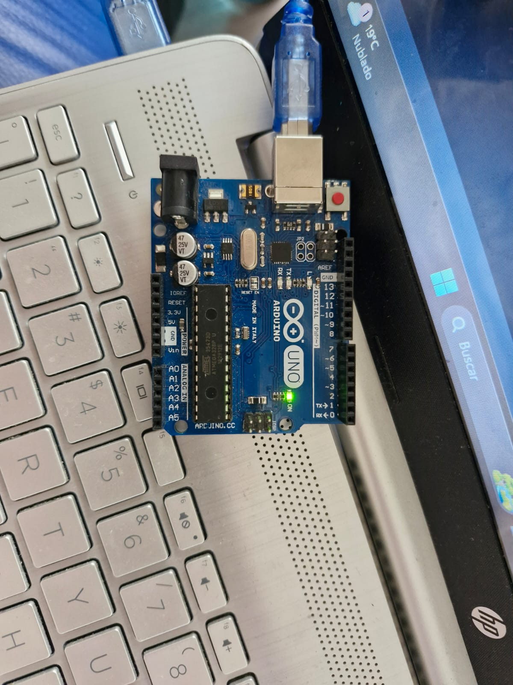
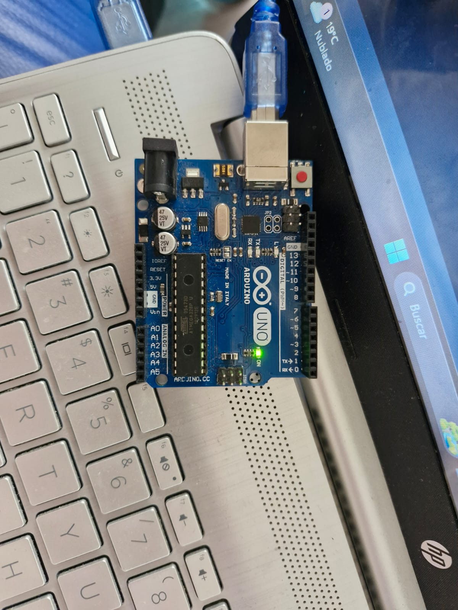
HIGH

LOW

LEDS

LEDS Protoboard

LEDS 1

LEDS 2

DISPLAY 1

DISPLAY 2
Arduino 1
En esta practicados pusimos a prueba las entradas digitales de un arduino para aprender o apagar un LED de acuerdo a el resultado de un botón en las entradas digitales. También logramos crear unas compuertas lógicas a base de estos botones y un LED. La versatilidad de una proviene de las entradas y salidas digitales que contiene, pues los 13 pines. Los puedo usar para recibir o brindar información y o voltaje la cual puede ser interpretada con el mismo código para cumplir ciertas funciones. En esta práctica ocuparemos los siguientes materiales y herramientas: - Arduino Uno - Computadora con el programa de Arduino instalado - Cable de comunicación de Arduino - 4 LEDS - 2 botones - Protoboard - Resistencias Al conectar un botón a un pin y colocar ese pin como entrada, podemos conseguir que un led conectado al Arduino como salida pueda prenderse y apagarse a la pulsación del botón usando ya sea un IF para detectar cuando el botón es pulsado o directamente darle el valor del botón al pin de salida. Usando contadores y delays, podemos crear un contador donde cada vez que se presione el botón, un LED se prenderá hasta completar la serie. Por último, podemos crear compuertas lógicas usando IF anidados para checar si 2 botones están siendo presionados o no y dar el resultado de esta operación. De esta práctica podemos concluir que el usar los pines de un arduino son la base de muchas instrumentos eléctricos y que con ellas podemos crear una infinidad de objetos y componentes, también podemos observar que requerimos una buena fundamentación de programación en c++ para conseguir códigos más eficazes a la hora de codificar el Arduino.
-

1 BOTON

2 BOTONES

CONDICIONALES 1 BOTON

CONDICIONALES 2 BOTONES

CONTADOR LEDS

OR

AND
Arduino 2
El Arduino es un código de fácil manejo que es utilizado para construir proyectos electrónicos y va a permitir crear diferentes tipos de microordenadores, para darle el uso que sea necesario. Y un servomotor será como un motor estándar que utiliza la retroalimentación de posición para controlar su velocidad de rotación y posición. La señal de control, que puede ser analógica o digital, representa el comando de posición final para el eje. Materiales: protoboard,jumpers, pila, fuente, servomotor, potenciómetro, Arduino. Construcción: Para la construcción del servomotor se tuvo que conectar este al Arduino y a la vez a la protoboard y cuando era requerido también se conectaba al potenciómetro, para que así todo el circuito estuviera conectado y alimentado. Hubieron veces que a la hora de la construcción se tuvieron que dejar las pilas de lado y pasar a una fuente, para que nos proporcionara el voltaje y la corriente necesaria. Los servomotores funcionaron bien y se pudieron lograr cada una de las prácticas requeridas de manera correcta, pudimos ver gracias a cada una de estas como es que funcionan los servomotores y que es lo que pueden ir haciendo, con las distintas programaciones que les des. Finalmente podemos concluir que los servomotores son herramientas muy potentes dependiendo de como los uses, y que tenemos muchas maneras diferentes de hacerlo y sobre todo que es importante reconocer cuando vas a ocupar una fuente y cuando puedes continuar con la pila, para que no le pase nada a ninguno de los componentes que estes utilizando.
-
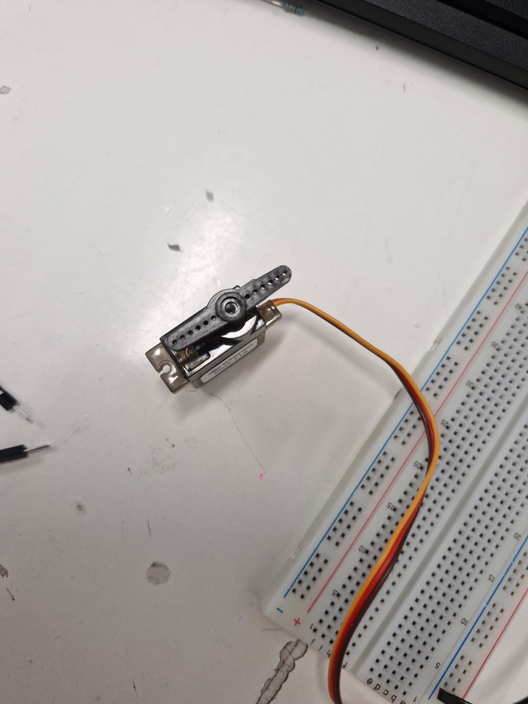
SERVO


SERVO VARIAS POSICIONES

SERVO Y POTENCIÓMETRO

2 SERVOS Y UN POTENCIÓMETRO

2 SERVOS Y 2 POTENCIOMETROS
Brazo Robótico
Resumen: Para esta práctica, el objetivo fue usar nuestros conocimientos previos de servomotores y potenciómetros para crear un brazo robótico desde 0, el cual tuviera las funciones de girar, estirarse y abrir y cerrar una pinza capaz de sostener una pelota y pasarla al siguiente brazo robótico sin que está cayera.
-
Resultados y proceso
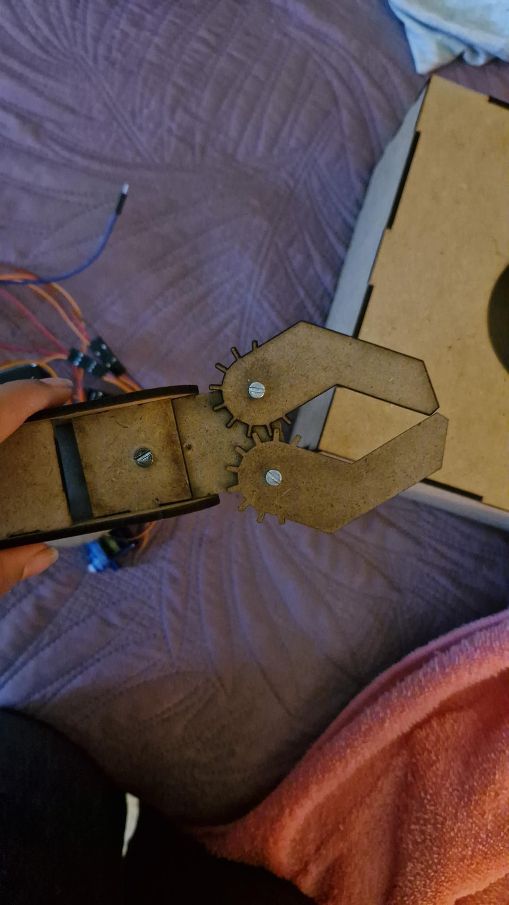Garra terminada
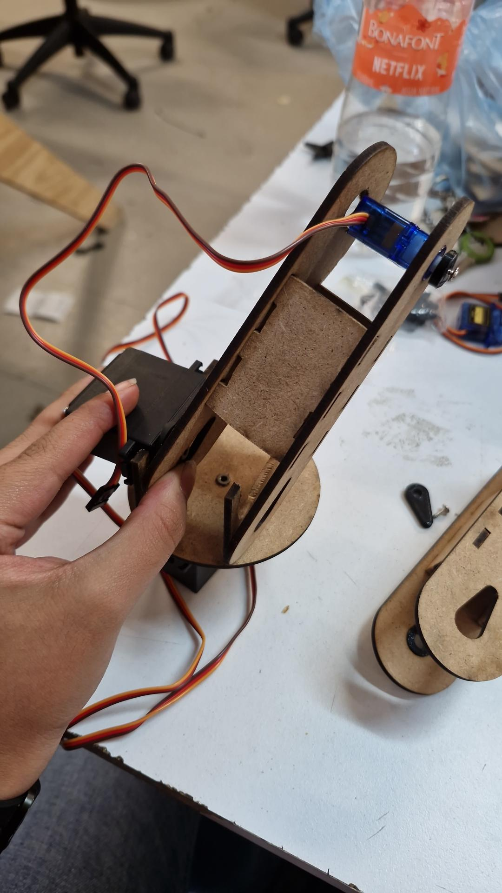Primera conexión
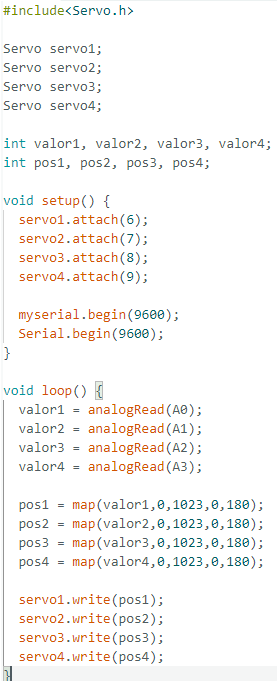Primera prueba del brazo y código de arduino
Resultado 1
Resultado 2
Bluetooth
Resumen: Para esta práctica, el objetivo fue poder programar y saber ocupar la aplicación de MIT App inventor, así mismo usar el módulo de Bluetooth para mantener una comunicación estable entre el arduino y un controlador remoto (celular).
-
Resultados
Resultado 1
Brazo Robótico con Bluetooth
Resumen: Usando los conocimientos del Bluetooth, buscamos implementarlo en el brazo robótico, para así poder controlarlo de manera remota.
-
Resultados:
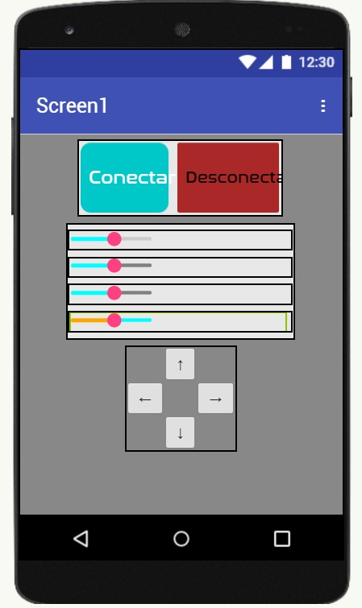Primera prueba del brazo y vista del MIT App Inventor
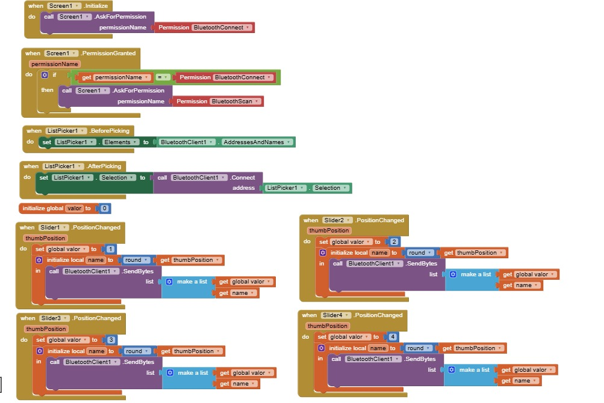Programación en MIT App Inventor
Carro controlado por Bluetooth
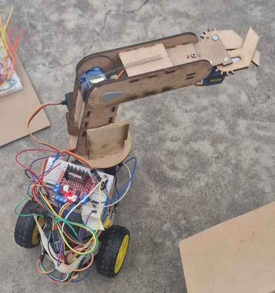Resumen: Para esta práctica, el objetivo fue poder programar y saber ocupar la aplicación de MIT App inventor al igual que hacer la parte mecánica de un carro, que debía tener el módulo de Bluetooth para mantener una comunicación estable entre el arduino y un controlador remoto (celular), este carro debía poder recoger pelotas.
-
Programación en MIT App Inventor
Vista de los controles en MIT App Inventor
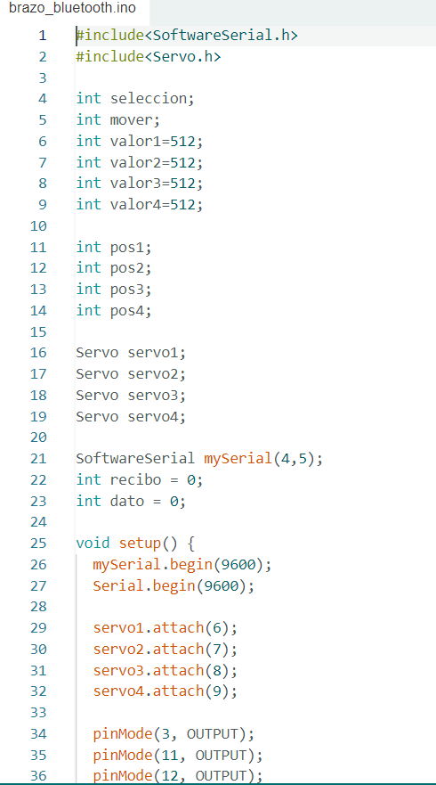Código de Arduino
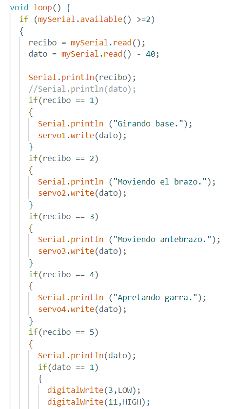Código de Arduino
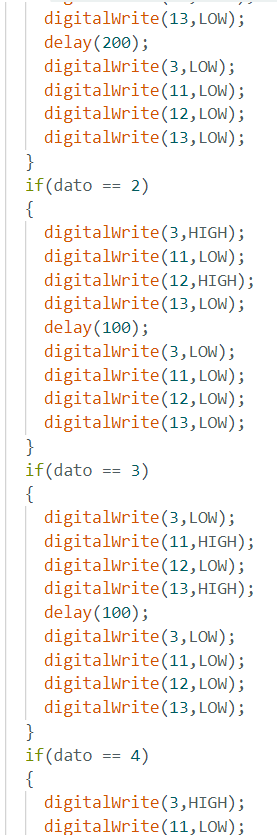Código de Arduino
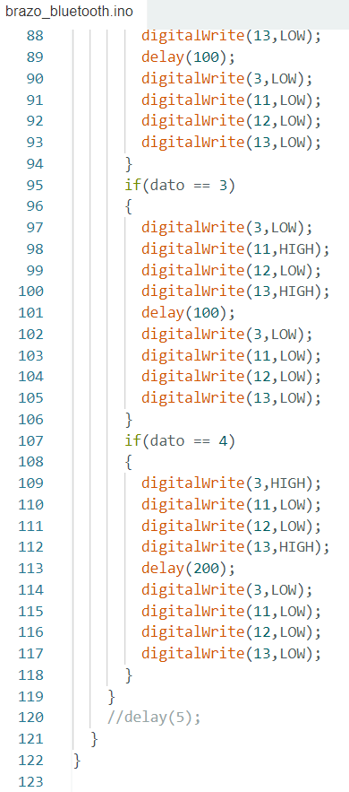Código de Arduino
Resultados
Resultado 1
Resultado 2
Link del instructable: https://www.instructables.com/Carro-Rob%C3%B3tico-Con-Garra/